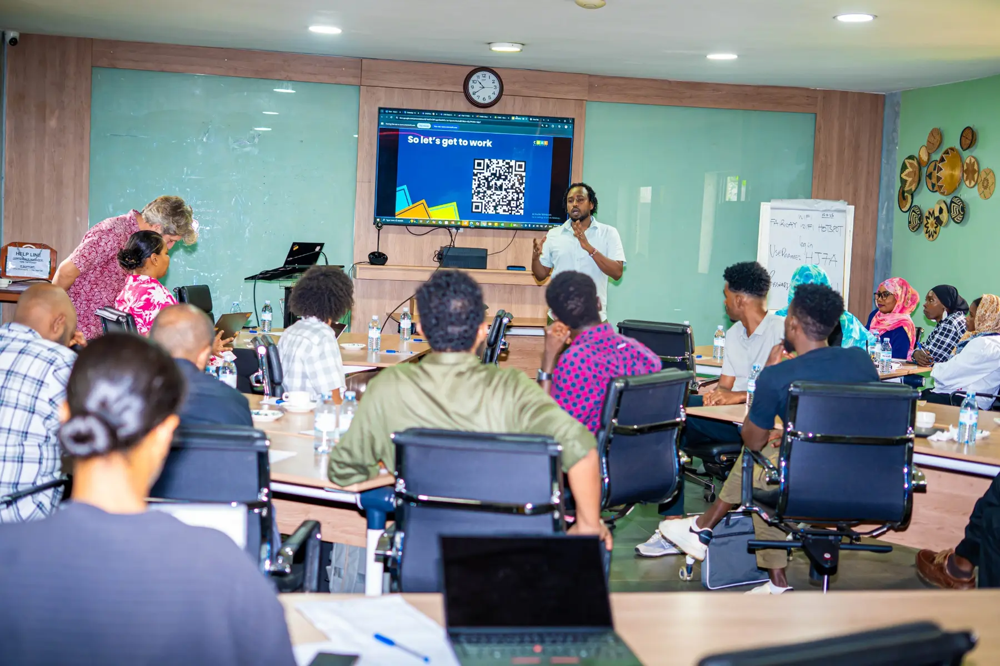
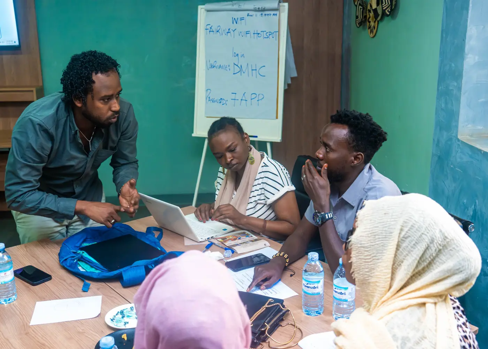
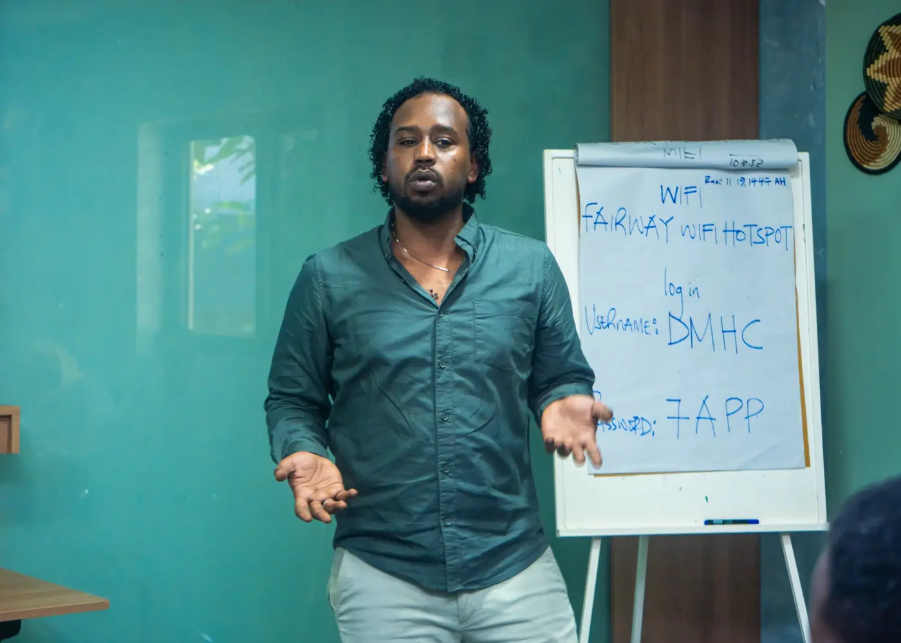

Context into action
Sudan actor, political-economy and information-environment analysis translated into practical programme decisions.
Sudan · Community-led response · Global partnerships
I am Mukhtar Elsheikh, a Sudan humanitarian programme and grants specialist connecting grassroots insight, accountable delivery and international partnership in conflict-affected settings.
I work at the intersection of programme delivery, community leadership and conflict-sensitive analysis—turning field realities into responsible decisions, strong partnerships and credible donor communication.
Sudan actor, political-economy and information-environment analysis translated into practical programme decisions.
Accompaniment for CSOs, Mutual Aid Groups and community responders, grounded in trust and local ownership.
Workplans, budgets, risk controls, reporting and learning processes that stay responsive as conditions change.

A case for localization
02 / Field principle
Localization is not a slogan or a transfer of tasks. It is a shift in trust, decision-making, resources and power toward the people closest to the work.
Communities hold knowledge that no remote system can replace.


“Proximity is not a limitation. It is expertise.”Mukhtar Elsheikh
What I bring
Programme-cycle coordination, workplans, milestones, budgets, procurement planning, compliance and donor reporting.
Partner accompaniment and institutional capacity support for grassroots responders and civil-society organisations.
Actor mapping, do-no-harm, protection-sensitive engagement, humanitarian access dialogue and adaptive risk analysis.
Donor briefs, bilingual facilitation, case studies, learning products and senior stakeholder communication.
Programme track
CDAC Network · Remote / Sudan
Sudanese Development Call Organization (NIDAA) · Sudan
Fikra for Studies & Development · Sudan
Capital Plus Co. Ltd · Sudan
National Information Center · Sudan
Beyond formal roles
2023–2026
Connected volunteers and community leaders with UN, donor, diplomatic and humanitarian actors while supporting needs analysis, access dialogue and protection-sensitive response.
2018–2022
Designed participatory learning on conflict analysis, negotiation, mediation, accountability and communication, adapted to local context and political sensitivity.
2018–2023
Supported non-violent civic mobilisation, participatory organising, public communication and engagement across diverse constituencies.
Education
BSc in Management Information Systems · Al-Neelain University, 2015
Professional development
Open to collaboration
Available for programme, grants, partnerships, localization and Sudan-focused advisory opportunities.